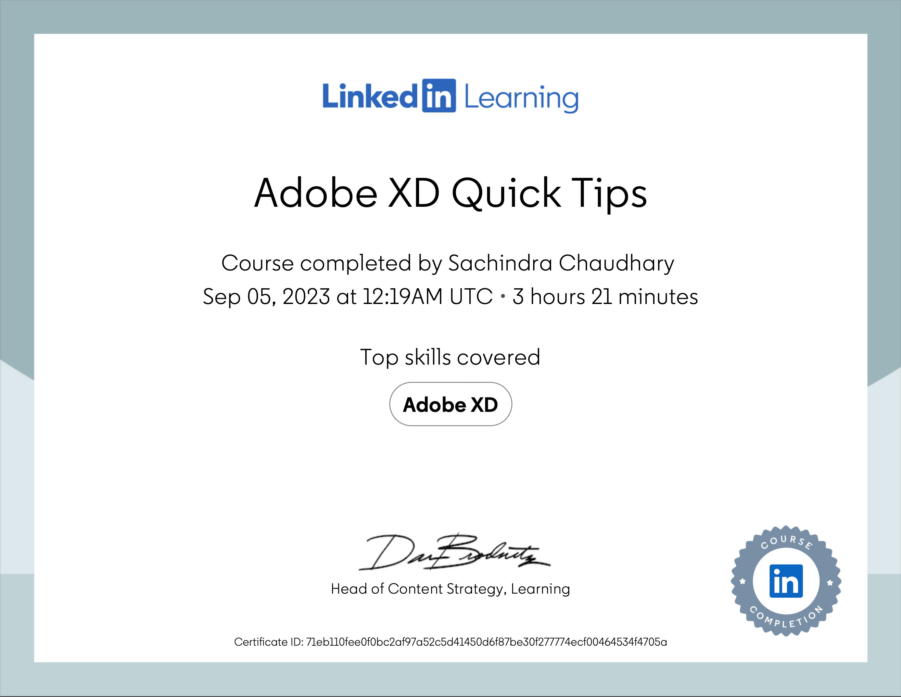

Certifications

Adobe XD Quick Tips
Evil by Design: Persuasion in UX
Pro-Level Photography for Graphic Designers
User Experience for Web Design

User Experience (UX) for Non-Designers
UX Foundations: Interaction Design
Studying for the Certified Business Analysis Professional
CompTIA Cybersecurity Analyst+ (CySA+)
Data Visualization for Data Analysis and Analytics
How to Present and Persuade with Data